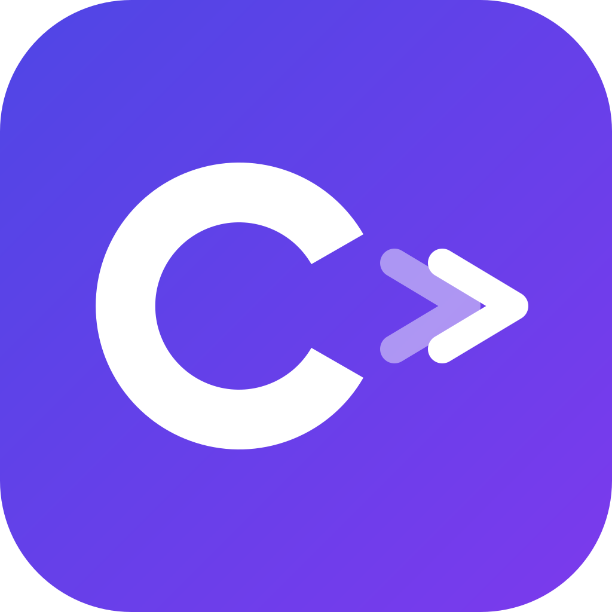

C 盘又红了？把占空间的大文件夹安全搬到其他盘，搬家后软件照样正常打开，不需要重装
专为 C 盘空间焦虑设计，搬家过程零文件丢失，搬家后软件无感知
每个文件搬家前后都做 SHA256 校验，一个字节不对都不删源文件
自动在原位置创建目录链接，软件从原路径访问毫无感知，无需重新安装
意外关机、崩溃后重新打开工具，自动恢复到断点继续，数据不会丢
迁移前检测文件是否被占用，删除失败时告诉你哪个文件被哪个进程占着
迁移后软件异常？点一下回滚，秒级恢复原状，无需重新拷贝数据
全程自动，你只需选择搬哪个文件夹、搬到哪个盘，迁移后确认即可
选 C 盘里占空间的文件夹
复制到目标盘并逐文件校验
重命名源目录后在原位置建链接
打开软件测试正常后确认完成
确认后自动删除旧源释放空间
你的数据安全是底线，任何步骤出问题都不会丢文件
每个文件搬家前后路径、大小、内容哈希必须完全一致，否则保留源
源目录仅重命名而非删除，原始数据始终完好直到你确认
迁移后需测试软件是否正常，确认后才删除旧源文件，异常可一键回滚
迁移后软件异常？点一下回滚秒级恢复原状，无需重新拷贝数据
搬家前检测文件是否被占用，精确定位到具体文件和进程
复制时保留目录链接结构，删除时只删链接不删目标数据
旧源文件删除后，目标数据是唯一副本，任何失败都不删除
搬家期间文件被修改时，自动同步差异文件并重新校验
了解哪些目录可以搬、哪些要注意，让搬家更安心
不确定能不能迁移？ 最简单的方式是问 AI，比如"XXX 软件安装目录可以用符号链接迁移到其他盘吗？"